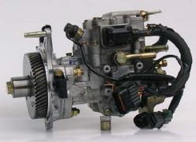
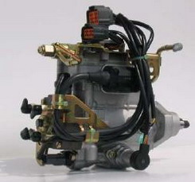

<table border=0 title="Zexel termékek" width="100%" cellpadding=15 cellspacing="0">

<COLGROUP>
	  <COL WIDTH="50%">
    <COLGROUP>
	  <COL WIDTH="50%">

	<tr><td colspan="2"><P><DIV class="cim">Zexel termékek<BR></DIV></P>

	<tr><td><P><td></P>

	<tr><td colspan="2">
<UL class="szoveg">
	<P><LI>VE forgóelosztó mechanikus rendszerû</P>
	<P><LI>VE – EDC forgóelosztó rendszerû</P>
	<P><LI>VE – COVEC –F forgóelosztó rendszerû, teljesen elektronikus rendszerû ROM modullal</P>
	<P><LI>VRZ forgóelosztó, radiáldugattyús rendszerû elektonikus szabályozású ROM modullal</P>
</UL><BR><BR>

<UL>
	<P><LI><A class="cuccos" href="index1.php?menu=zexelforgo">Forgóelosztós rendszerû porlasztók</A></P>
	<P><LI><A class="cuccos" href="index1.php?menu=zexelvrz">VRZ-radiál dugattyús rendszerû adagolók</A></P>
	<P><LI><A class="cuccos" href="index1.php?menu=zexelsoros">Soros rendszerû adagolók</A></P>
</UL>
</table>